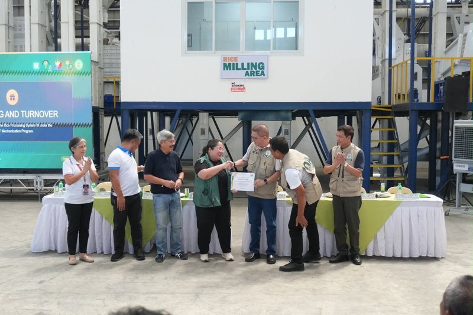
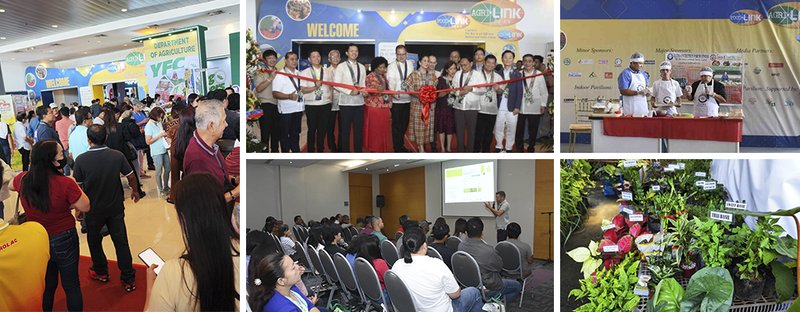
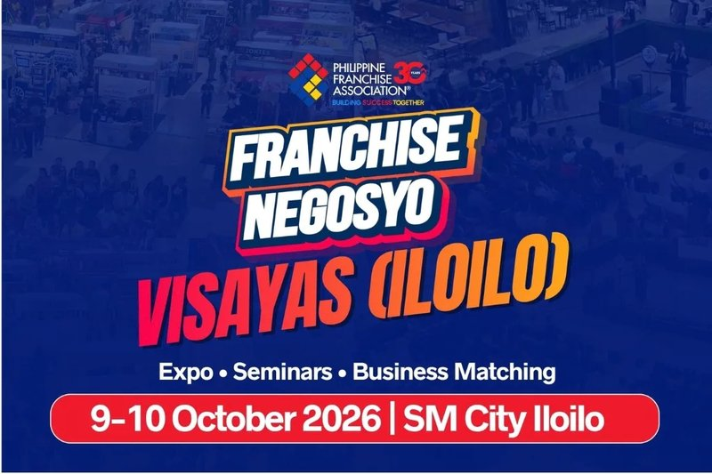

NFA restarts four Nueva Ecija plants — dryers and a Tarlac warehouse
30 Sep 2026 (Tarlac lease live 1 Oct)
BusinessWorld / NFA: Branch Manager Maria Luisa L. Luluquisen says work will resume on four National Food Authority facilities in Nueva Ecija — two in Cabanatuan City, one in Muñoz, one in Guimba — after 2025 construction stalls (low-bidder disqualification and post-qualification in Cabanatuan/Muñoz; warehouse redesign in Guimba). Each unit is rated to process 10 tons per hour (~200 bags). Once operational (target 2027), combined output is projected at 2,016 bags of rice a day. The mechanical-dryer story is bigger than the mill: wet-palay drying capacity jumps to 16,800 bags/day from 360 — Cabanatuan 240→8,400, Muñoz 120→2,400, Guimba from zero to 6,000. Luluquisen’s operator line: farmers now wait roadside for traders to haul and price; with dryers and trucks, NFA goes to them. United Productive Farmers of Calibungan’s Inocencio T. Domingo flags the opposite pain — no equipment or trucks to reach NFA. Same week, DA says NFA leased 1,782 sqm from SL Agritech in Victoria, Tarlac, good for ~100,000 bags of palay, with occupancy from Oct 1. Agriculture Secretary Francisco P. Tiu Laurel Jr. (NFA Council chair): every extra warehouse square meter is room to buy palay at reasonable prices. Operator read for Calamba: this is 2027 procurement muscle under a Very Strong El Niño watch, not a Monday kitchen print. Retail well-milled is still stuck near ₱56 and +19% YoY; BSP’s Sep inflation band lands Monday. Do not rewrite rice plates on dryer press. Do watch whether NFA’s buying cadence tightens trader spreads into dry season — that is when your miller quotes move. Soft pork remains the hedge window from this week’s PSA tape; rice stays the floor.
Open NFA / BusinessWorld rewrite · DA Cabanatuan gallery

Agrilink / Foodlink / Aqualink — Oct 8–10 at WTC Pasay
8–10 Oct 2026
Foundation for Resource Linkage and Development: the three-in-one trade fair returns to World Trade Center Metro Manila (Roxas Blvd corner Sen. Gil Puyat, Pasay) next Thursday through Saturday — 31st International Agribusiness Exhibition, 25th Food Processing/Packaging/Products (Foodlink), and 20th National Fisheries (Aqualink). Exhibition hours: Oct 8–9 9:00 a.m.–6:00 p.m.; Oct 10 9:00 a.m.–5:00 p.m. Admission is free; dress code business attire. Seminars run alongside the floor; institutional partners include DA-PHilMech and the KADIWA Expo lane that links farmers, fisherfolk, and MSMEs to buyers. Operator read for Calamba: clear the calendar. This is the densest three-day sourcing room you will get before Q4 mall gravity (SM Sto. Tomas expansion still Q4; SM Nuvali Nov 27) pulls weekend attention south. Walk Foodlink for pack, cold-chain, and portioning kit you can amortize against sticky rice and whipped cabbage; walk Agrilink for grower/processor contacts you can dual-source when highland veg spikes; walk Aqualink if galunggong/calamansi volatility is rewriting your fish plate. Do not treat it as a brochure stroll — leave with three supplier cards and one equipment quote you can compare to your current miller and produce broker. Entrepreneurial edge: the booths that talk blast-freeze, shelf-life, and export paperwork are the same operators who will still deliver when Habagat or El Niño knocks a wet-market SKU offline.
Open Agrilink visitors · Open Agrilink home

Franchise Negosyo closes 2026 in Iloilo — 200+ brands at SM
9–10 Oct 2026
BusinessMirror / Philippine Franchise Association: Franchise Negosyo Visayas (Iloilo) stages Oct 9–10 at SM City Iloilo, 10:00 a.m.–7:00 p.m. — the association’s first stop inside that mall and the finale of the 2026 regional roadshow. Floor pitch: 30+ exhibitors and 200+ franchise brands plus allied suppliers. Free seminar “How to Invest in the Right Franchise” with Francorp operations consultant Vida Cabanlit, paired with franchisor package presentations — Oct 9 at 2:00 p.m. and Oct 10 at 1:00 p.m. FLAG: this is roadshow/PR desk coverage; treat investment packages as sales material until you diligence unit economics yourself. Operator read for Calamba: you are not flying to Iloilo to lease SM City Iloilo. You are watching how PFA densifies franchise literacy outside NCR in the same week Agrilink fills WTC. Steal the diligence frame — fee stack, royalty, commissary lock-in, territory, and what happens when rice and power reprice the value meal — then apply it to any Laguna/Cavite pitch that lands on your desk. Mid-ticket healthy-fast (Wall Street Wraps this week) and coffee (Compose) already proved capital-light franchise is how chains fill provincial malls; the Iloilo finale is the catalog. If a brand cannot show food-cost and labor math under a ₱56 rice floor, walk.
Open BusinessMirror / PFA